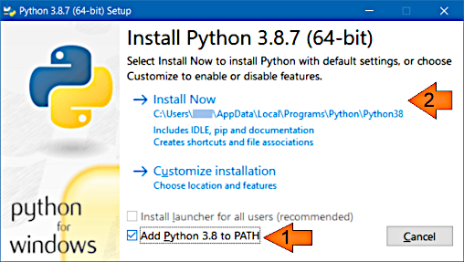

HomeInstallationUsageIndex
HomeInstallationUsageIndex GitHub
</>
GitHub
</>
Technical reference
This page contains reference information such as factual technical details and descriptions that are usually long and would unnecessarily overload the other pages if placed there.
Python runtime can be installed in different ways. Here are brief instructions for a typical installation on Windows.
Note
This is just one of the methods intended mainly for less experienced users and those who want to save time. Other installation methods will most likely work as well.
The installer file name is python-3.8.7-amd64.exe (or choose the other one applicable to your
platform). Only the following option (1) must be changed:

Nothing else should be changed in this and the subsequent dialogs.
The following command may be used to check whether Python is installed:
>python --version
Python 3.8.7Note
On Linux, the python command may refer to Python 2, which does not suffice for this
program. Python 3 may need to be installed separately and called with the python3
command.
Here is the program's help (the Python example, the Java version will give a similar output):
>python %MD2HTML_HOME%/python/md2html.py -h
usage: md2html.py [-h] [--input-root INPUT_ROOT] [-i INPUT]
[--input-glob INPUT_GLOB] [--sort-by-file-path]
[--sort-by-variable SORT_BY_VARIABLE] [--sort-by-title]
[--output-root OUTPUT_ROOT] [-o OUTPUT]
[--argument-file ARGUMENT_FILE] [-t TITLE]
[--title-from-variable TITLE_FROM_VARIABLE]
[--template TEMPLATE] [--link-css LINK_CSS]
[--include-css INCLUDE_CSS] [--no-css]
[--cache-file CACHE_FILE] [-f] [-v]
Creates HTML documentation out of Markdown texts.
options:
-h, --help show this help message and exit
--input-root INPUT_ROOT
root directory for input Markdown files. Defaults to
current directory
-i INPUT, --input INPUT
input Markdown file name: absolute or relative to the '
--input-root' argument value
--input-glob INPUT_GLOB
input Markdown file name pattern: absolute or relative
to the '--input-root' argument value
--sort-by-file-path If '--input-glob' is used, the documents will be sorted
by the input file path
--sort-by-variable SORT_BY_VARIABLE
If '--input-glob' is used, the documents will be sorted
by the value of the specified page variable
--sort-by-title If '--input-glob' is used, the documents will be sorted
by their titles
--output-root OUTPUT_ROOT
root directory for output HTML files. Defaults to
current directory
-o OUTPUT, --output OUTPUT
output HTML file name: absolute or relative to '--
output-root' argument value. Defaults to input file name
with '.html' extension
--argument-file ARGUMENT_FILE
argument file. Allows processing multiple documents with
a single run. Also provides different adjustment
possibilities and automations. If omitted, the single
file will be processed
-t TITLE, --title TITLE
the HTML page title
--title-from-variable TITLE_FROM_VARIABLE
If specified then the program will take the title from
the page metadata at the step of making up the input
file list
--template TEMPLATE template that will be used for HTML documents generation
--link-css LINK_CSS links CSS file, multiple entries allowed
--include-css INCLUDE_CSS
includes content of the CSS file into HTML, multiple
entries allowed
--no-css creates HTML with no CSS. If no CSS-related arguments is
specified, the default CSS will be included
--cache-file CACHE_FILE
build cache file for incremental builds
-f, --force rewrites HTML output file even if it was modified later
than the input file
-v, --verbose outputs human readable information messagesHere are some additional explanations:
--output — the program expects it to be defined as location relative to the
program invocation current directory. This is required for possible further relative paths
recalculations. The --input and the --template arguments are recommended to be
defined the same way. Other variations were not tested, so they should be used only if
required and tested first. See the
recommended project structure for an example
--input-glob — lets specify an input file set like this: doc_src/*.txt —
that means "all files with txt extension in directory doc_src". Also see
[glob_wiki]
--force — if it's not specified then only the input files that were changed
since their previous processing moment will be processed. Specify this argument to forcibly
regenerate all output files
Note
Processing only changed files is faster but needs some care. Changes in the template must be reflected in all output files that use this template, but if an input file is unchanged it will not be updated. This also applies to page flows, GLOBs and some other cases. If a new input file is added or an existing one is deleted, corresponding page flows will be changed and these changes must be reflected in all corresponding output files.
So use -f option in any cases when there's a risk of breaking the documentation
consistency.
Also see:
--cache-file argument
--cache-file — specifies the build cache file and enables a smarter generation scope
determination and project cleanup. In this mode the program automatically identifies
the input file set changes and, based on this and some other data, decides to turn on the
full project regeneration. Also when some input files are removed by the user,
the corresponding output files are automatically removed as well (also see the
troubleshooting section)
Note
This feature is introduced in version 1.0.8 and is not expected to cover all possible
program usage scenarios, but just the most frequent of them. For example, the template
changes are not tracked yet. In case of doubt, or from time to time, please use the
--force flag.
--no-css — if neither --link-css nor --include-css is specified then the
default CSS is included into the page. To avoid this, use --no-css argument; then no CSS
will be used on the template resolution
Here is a very simple example of an argument file content:
{
"documents": [
{ "input": "index.txt", "title": "Home" },
{ "input": "about.txt", "output": "about.html", "title": "About" }
]
}Here is a quite complex example of an argument file content:
{
"options": {
# This only affects the whole run verbosity, for now only printing execution duration.
"verbose": true
},
"default": {
# These are the default options for all documents.
"input-root": "doc_src",
"output-root": "doc",
"template": "doc_src/templates/multipage.html",
"no-css": true,
"page-flows": ["sections"]
},
"documents": [
{ "input-root": "", "output-root": "", "input": "index.txt", "title": "Home" },
{ "input": "about.txt", "title": "About" },
{ "input-root": "tech_src", "output-root": "tech",
"input": "debug.txt", "output": "debugging.html",
"title": "Debug", "page-flows": [] }
],
"plugins": {
"variables": {"logo": "<img src=\"logo.png\" />" },
"page-variables": {},
"relative-paths": { "resource_path": "doc/" },
"page-flows": {
"otherLinks": [
{ "link": "https://daringfireball.net/projects/markdown/",
"title": "Markdown Home", "external": true },
{ "link": "https://en.wikipedia.org/wiki/Markdown",
"title": "Markdown Wiki", "external": true }
]
},
"index": {"index": {"output": "index_page.html", "title": "Index",
"index-cache": "index_cache.json" }
}
}Argument file format is JSON [json].
Note
Comments are not allowed in JSON syntax, but in this program, whole-line comments may be added
with # as the first non-blank symbol of the line; such lines will be ignored.
Also the program ignores unknown keys that may be used for temporarily removing parameters.
For example, if "plugins" is replaced with "plugins1" then all plugins will be disabled.
Still the argument file format defines necessary elements and other rules that will
be checked before processing.
The following is the detailed argument file format description by sections:
| Name | Type | Required | Description |
|---|---|---|---|
| title* | string | No | Writing work title |
| logo* | string | No | Logo image (relative to the project root) |
| home-page* | string | No | Writing work start page (relative to the project root) |
| options | object | No | Options for the whole program run |
| default | object | No | Default options for the documents |
| documents | array of objects | Yes | Documents that will be processed |
| plugins | object | No | Plugins that will be used for the documents processing |
* As for now, the "title", "logo" and "home-page" properties are not processed by the program. This metadata may be used by other programs, e.g., for cataloguing purposes.
options sectionProperties:
| Name | Type | Required | Description |
|---|---|---|---|
| verbose | boolean | No | The whole run verbosity, for now, only printing execution duration on finish |
| cache-file | string | No | Specifies the build cache file, see here |
documents and default sectionThe documents section is an array of objects with the properties listed below. It defines the
set of documents that will be processed.
The default section parameters will be applied to the document definitions if they are not
defined explicitly. It contains a subset of the document properties in the documents section.
| Name | Type | Required | Has default | Description |
|---|---|---|---|---|
| input-root | string | No | Yes | Root directory for input Markdown files |
| input | string | No | Yes | Input Markdown file: absolute or relative to the input-root property value |
| input-glob | string | No | Yes | Input Markdown file name pattern, absolute or relative to the input-root' property value |
| sort-by-file-path | boolean | No | Yes | If input-glob is used, the documents will be sorted by the input file path |
| sort-by-variable | string | No | Yes | If input-glob is used, the documents will be sorted by the value of the specified page variable |
| sort-by-title | boolean | No | Yes | If input-glob is used, the documents will be sorted by their titles |
| output-root | string | No | Yes | Root directory for output HTML files |
| output | string | No | Yes | Output HTML file: absolute or relative to the output-root property value |
| title | string | No | Yes | Page title |
| code | string | No | Unique page code, may be used by plugins | |
| title-from-variable | string | No | Yes | Take the title from the page metadata |
| code-from-variable | string | No | Yes | Take the code from the page metadata |
| template | string | No | Yes | Template that will wrap the generated HTML content |
| link-css | array of strings | No | Yes | List of CSS resources that will be linked to the page |
| include-css | array of strings | No | Yes | List of CSS files that will be included into the page |
| no-css | boolean | No | Yes | Defines no CSS to be linked or included |
| add-link-css | array of strings | No | Adds linked CSS to the previously defined list | |
| add-include-css | array of strings | No | Adds included CSS to the previously defined list | |
| page-flows | array of strings | No | Yes | Names of the page flows the page belongs to |
| add-page-flows | array of strings | No | Adds page flow names to the previously defined list | |
| verbose | boolean | No | Yes | Outputs human readable information about this document generation |
plugins sectionMay contain multiple properties:
| Name | Type | Required | Description |
|---|---|---|---|
| plugin name | defined by plugin | No | Plugin data |
The plugins data and the plugins themselves are described in the separate sections.